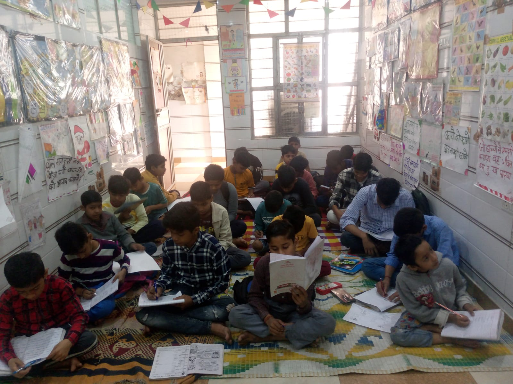
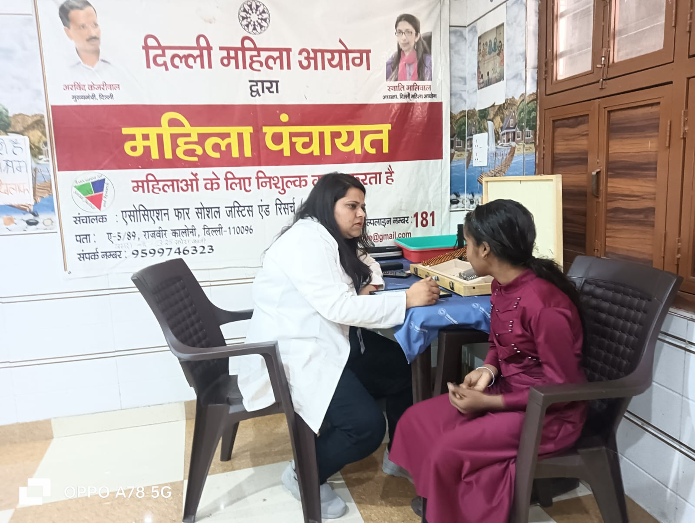
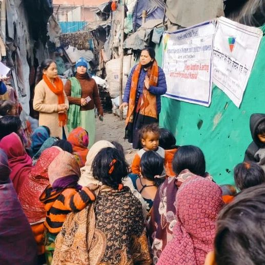

Mahila Panchayat: Empowering Women Through Community Justice
Since 2013, our Mahila Panchayat programme has provided an alternative justice delivery system for women in distress, at their own doorstep.
Read full story →
Stories from the field
Field notes, campaign write-ups and programme updates from our team in East Delhi.

Since 2013, our Mahila Panchayat programme has provided an alternative justice delivery system for women in distress, at their own doorstep.
Read full story →The Mahila Panchayat Programme, initiated in August 2013 at Ghazipur Dairy Farm, has become a beacon of hope for women facing domestic violence. Supported by Azim Premji Foundation, this community-based initiative has registered over 250 domestic violence cases, successfully resolving 102 through counselling and mediation.
What makes Mahila Panchayat unique is its doorstep delivery of justice. Women don't need to travel to courts or police stations; they can seek help within their own community. The panchayat consists of trained women leaders who conduct hearings, provide legal awareness, and help victims access government schemes.
In one recent year alone, the team conducted 48 nukad meetings reaching 2,430 women, organised 47 panchayat meetings, and contacted 22,891 households through door-to-door outreach. The impact has been transformative — women who once suffered silently are now raising their voices and claiming their rights.

Our NIIT Foundation-affiliated Digital Learning Centre is transforming the lives of 55 youth annually through computer education.
Read full story →In an increasingly digital world, a lack of computer literacy can be a major barrier to employment. Recognising this, ASOJ established the Digital Learning Centre (DLC), affiliated with NIIT Foundation, offering CCAB-certified courses to youth from marginalised communities.
The programme has seen encouraging results: one 16-year-old who had never touched a computer now confidently creates documents and helps her peers. Another graduate is pursuing a COPA (Computer Operator and Programming Assistant) course, and a third is now pursuing web design after completing DLC training.
With 55 students enrolled annually and a 100% course-completion rate, the DLC is bridging the digital divide and creating pathways to better futures.
Our two Child Activity Centres in Ghazipur and Gharoli are providing remedial education to 160+ children from marginalised communities.
Read full story →Education is one of the most powerful tools to break the cycle of poverty. Our Child Activity Centres (CAC) in Ghazipur slum and Gharoli provide remedial education to 160+ children from families who cannot afford private tutoring.
The impact speaks for itself: 4 children secured first and second positions in their respective classes, school attendance has increased, and 143 out-of-school children have been enrolled in mainstream schools through our advocacy.
Two sisters who never attended school due to extreme poverty now recognise Hindi letters and can recite multiplication tables from 2 to 10 — within just two months of joining the CAC. Stories like theirs are why this work matters.

Our four-day 'Break the Silence Against Domestic Violence' campaign reached 2,660 community members through rallies, street plays and awareness activities.
Read full story →Silence is often the biggest obstacle to justice. Our 'Chuppi Todo' (Break the Silence) campaign encouraged women to speak up against domestic violence and gender discrimination.
The campaign included community rallies with 53 women participants, street plays, slogan-writing exercises and self-identity activities. A stakeholders' meeting brought together counsellors from the One Stop Centre Kalyanpuri, school principals, and representatives of local elected offices.
Through this campaign, 2,660 community members learned about domestic-violence laws, legal-aid services, and the importance of speaking up. Women now know that staying silent is never the answer.

Over 4,050 community members have benefited from our health camps, receiving free medical check-ups and medicines.
Read full story →Access to quality healthcare remains a challenge for marginalised communities. Our health camps bridge this gap by bringing medical services directly to the doorsteps of those who need them most.
Women and children from Ghazipur slum and Sapera colony have benefited immensely — 4,050+ people have received free check-ups and medicines, and vaccination camps have achieved a 90% adult-vaccination rate in our target areas.
Beyond curative care, we focus on preventive health education — menstrual hygiene, nutrition awareness, and WASH protocols. Monthly sanitary-pad distribution with the PINKISHE Foundation ensures adolescent girls don't miss school due to lack of hygiene products.

Through persistent advocacy and community mobilisation, we have enrolled 143 out-of-school children into mainstream education.
Read full story →When schools closed during the pandemic, many children from marginalised families never returned. The 'Back to School' campaign was launched with a single mission: bring every child back to education.
In one year we enrolled 65 out-of-school children; the next year, another 40. When 32 children were denied admission to MCD schools for lack of documents, we advocated with the Director of Education and DCPCR, resulting in 30 children being admitted — including 11 without any documents at all.
Children who were once rag-pickers, domestic workers, or had simply never attended school are now sitting in classrooms, dreaming of brighter futures. Every child deserves this chance.
18 mental-health sessions with 185 children have helped them identify anger triggers and develop healthy coping mechanisms.
Read full story →Mental health is often overlooked in discussions of child welfare, yet children from stressful environments face unique emotional challenges. Our mental-health workshops address this gap.
Through 18 sessions with 185 children (86 boys, 99 girls), we've taught children to identify signs of anger, understand the 'stairway of anger', and develop strategies to calm down when upset. Children now report being better able to understand their feelings and manage their reactions.
This emotional intelligence will serve them for life — helping them build healthier relationships and cope with future challenges.

Two gender-sensitisation workshops with 80 women participants challenged patriarchal norms and built confidence to speak against discrimination.
Read full story →Gender discrimination is deeply embedded in social norms and cultural practice. Legal information alone isn't enough — mindsets have to change too.
Our workshops brought together 40 women per session to discuss how patriarchal structures shape gender discrimination. Women shared experiences of being conditioned to accept unequal roles as 'duty'.
Through poster-making, slogan-writing and nukkad plays, participants gained the confidence to recognise discrimination and raise their voices against it. Women are now increasingly approaching Mahila Panchayat to register complaints when they experience violence or disrespect at home.
We send occasional updates — no spam, unsubscribe any time.
Donate insteadSubscribe for programme updates, stories, and our annual report.